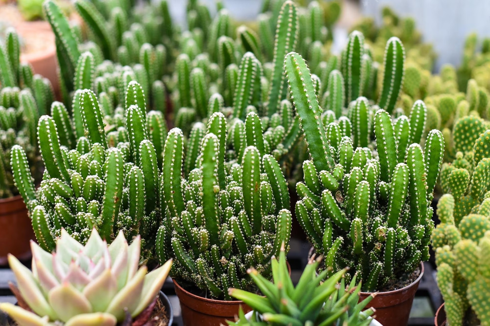
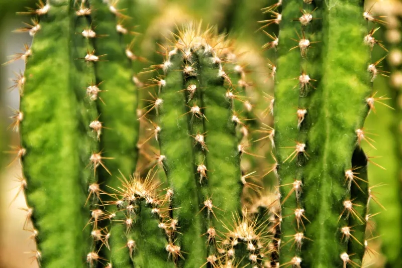
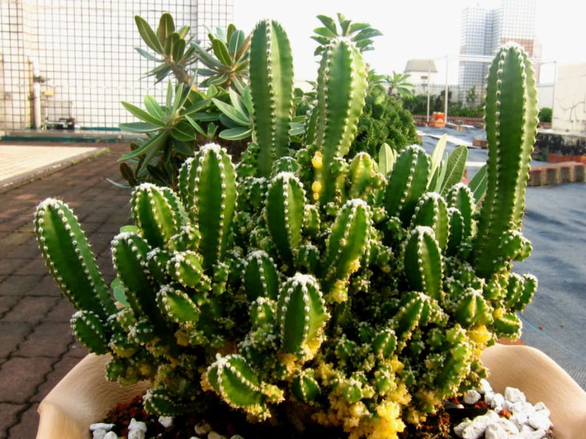
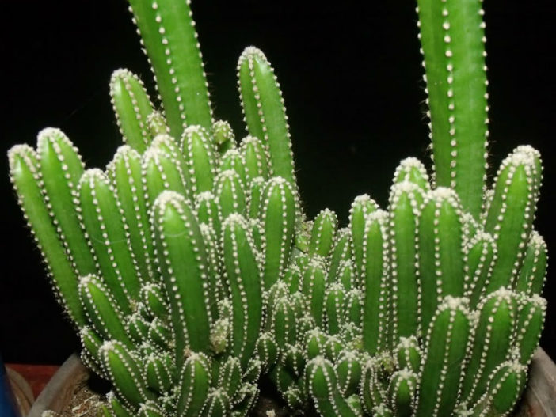

Acanthocereus Cactus
Cacti have a easy appeal that attracts plant fanatics and creditors alike.
Introduction:
Cacti have a easy appeal that attracts plant fanatics and creditors alike.
One of the tremendous series of cactus species that proudly represents its fascinating
and terrific glory is the Acanthocereus cactus Because of the interesting form of the
Acanthocereus cactus, the lovely plant life and the dry regions translations, it gives
you a higher view of the vegetation on the wooded location.
Acanthocereus Cactus:
Overview : Acanthocereus is a genus of cacti with spherical 20 species.
This cacti is community in masses of factors of america, from the southern United
States to South America.
The call "acanthocereus" is derived from the Greek terms
"acanth", which means that thorny one, and "kerrus" because of its horn, which correctly
describes the useful spine of this cacti.

Physical Characteristics
Cactus Acanthocereus tetragonus is a columnar cactus belonging to Mexico, Florida, and the Texan Rio Grande Valley.
It grows quite tall, almost 2 meters to 7 meters in height.
The plant is characterized by green stems and gray areoles. The central areoles are filled with 1-2 spines.
The radial areoles have about 6-8 spines.
The call "acanthocereus" is derived from the Greek terms
"acanth", which means that thorny one, and "kerrus" because of its horn, which correctly
describes the useful spine of this cacti.

As a part of the Cactaceae family, Acanthocereus tetragonus is an exciting addition to your cacti collection.
It is also known as the Fairy Castle cactus thanks to its multiple branches that are curved to give the
appearance of the towers and minarets of a fairytale castle. The other common names of the cactus are Triangle
cactus, Sword-pear, or wire cactus.
It is also known as the Fairy Castle cactus thanks to its multiple branches that are curved to give the
appearance of the towers and minarets of a fairytale castle. The other common names of the cactus are Triangle
cactus, Sword-pear, or wire cactus.
The good part is that this cactus variety is pretty common. You can get the Acanthocereus tetragonus for
sale from almost all online cactus stores. There is only one known type of fairy castle cactus.
How to take care of Acanthocereus cactus:
1. Acanthocereus Cactus Watering system
Watering Acanthocereus cacti nicely is vital for their health and nicely-being, as they may be
tailor-made to arid environments and have specific water necessities. Here are some pointers for
watering Acanthocereus cacti
Allow Soil to Dry: Acanthocereus cacti choose to be watered very well but once in a while. Allow
the soil to dry out completely among waterings. Stick your finger approximately an inch into the soil –
if it feels dry, it's time to water.
Seasonal Variations: Adjust your watering schedule in line with the seasons. During the lively developing
season (commonly spring and summer time), while the cactus is commencing new growth, you may water a chunk
extra frequently. In the dormant or cooler months (fall and iciness), reduce watering to keep away from over
moistening the soil.
Pot and Soil: Make certain the pot has drainage holes to save you water from pooling at the bottom.
Use a nicely-draining cactus or succulent mix that lets in more water to get away with out troubles.
Watering Technique: When it is time to water, water the soil without delay across the base of the cactus.
Avoid getting water on the cactus itself, particularly the spines, as moisture can promote fungal growth and
cause rot.

Temperature required for Acanthocereus Cacti:
Acanthocereus cacti, like many different cactus species, have tailored to thrive
in arid and semi-arid environments.
Temperature plays a important role in their boom
and universal fitness. Here are a few temperature-associated issues for Acanthocereus cacti:
• Temperature Range:
Acanthocereus cacti normally prefer warm to hot temperatures. They thrive in temperatures ranging
from about 70°F to 90°F (21°C to 32°C) all through the daylight.
• Avoid Extreme Cold:
While these cacti are adapted to face up to better temperatures, they can be sensitive to
intense bloodless. It's first-class to keep away from exposing them to temperatures below 50°F (10°C)
for extended intervals. Frost may be specifically destructive to Acanthocereus cacti, so protect them
from freezing temperatures.
• Winter Care:
During the chillier months, it's beneficial to deliver Acanthocereus cacti indoors if you
live in an area with freezing temperatures. Keep them in a well-lit place, like a sunny windowsill,
where they are able to nevertheless receive adequate mild even when it's too bloodless to maintain them
outdoor.
Remember that specific temperature preferences can vary slightly among different Acanthocereus
species and hybrids, so it's a good idea to research the particular type you have. By providing the
right temperature conditions, you can help your Acanthocereus cacti thrive and maintain their health
and beauty.

• Soil Requerments:
Creating the right soil environment is crucial for the fitness and increase of Acanthocereus cacti.
These cacti, like maximum barren vicinity plants, require nicely-draining soil that replicates their
natural habitat. Here's what you want to understand about soil necessities for Acanthocereus cacti:
Well-Draining Mix: Use a properly-draining cactus or succulent potting combination. These mixes commonly
incorporate substances like sand, perlite, and coarse gravel that allow water to drift via without difficulty,
stopping waterlogged roots.
Avoid Regular Garden Soil: Regular garden soil is regularly too dense and retains an excessive amount of
moisture for cacti. It can motive root rot and other troubles. Opt for specialized cactus or succulent soil
blends.
Propagation of the Acanthocereus Cactus
The best way to propagate the Acanthocereus cactus is via seeds or stem cuttings. Propagating Acanthocereus
cactus has a higher success rate with stem cuttings.
Fairy castle cactus cutting propagation method: First sterilize a sharp pair of gardening scissors or a
knife. You need to cut a single stem from the parent plant. Let that stem be callous for a few days. Then,
the plant is in a well-drained sandy loam soil. Follow the watering pattern mentioned above.
Seed propagation Acanthocereus cactus: The fruits of the cactus bear seeds. These can be sowed in a
cactus potting mix. Acanthocereus cactus seeds propagation is a prolonged process.
Cacti have a easy appeal that attracts plant fanatics and creditors alike.